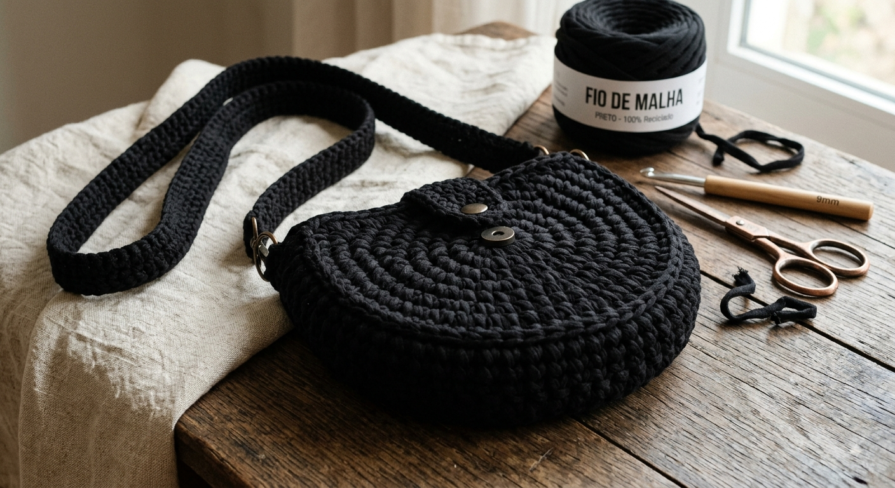

Meu primeiro trabalho
Sejam bem vindos ao meu blog aqui eu irei ensinar como fazer crochê de forma fácil e rapída e que possa render dinheiro
por:Emanuele Eduarda
Venha se apaixonar pela arte do crochê!!

Sejam bem vindos ao meu blog aqui eu irei ensinar como fazer crochê de forma fácil e rapída e que possa render dinheiro
por:Emanuele Eduarda